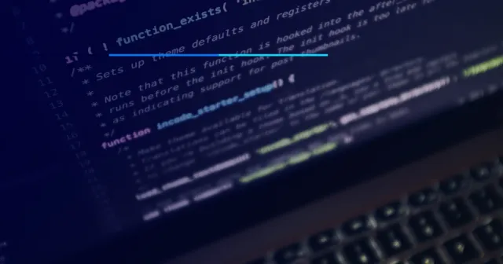

Mercado de Trabalho
10 minutos de leitura
ÁREA DE TI: QUAL A ÁREA MAIS BEM PAGA E COMO INICIAR EM TI
A área de TI, é aquela responsável por gerenciar o fluxo de Informações em redes de computadores
leia mais 

QUAIS AS LINGUAGENS DE PROGRAMAÇÃO MAIS BEM PAGAS (2022)
Não existe um salário mínimo definido para programador mas desde 2013 tramita na câmara o projeto de PL 5487/2013,
que tem como finalidade, regulamentar a profissão “Analista de Sistemas”.
A ideia da PL 5487 é que apenas profissionais com certificados e diplomas de formação superior consigam trabalhar na área.
No entanto, não há previsão e nem indício de que irá vigorar.
Para se ter uma estimativa, no Brasil, segundo o site Glassdoor, atualmente o salário médio de um programador é de R$3.526.
Mas é bom ter em mente que isso pode variar de acordo com alguns fatores, como especialização, localização e experiência profissional..
Escrito por: Ugo Roveda
Acessar post
ÁREA DE TI: QUAL A ÁREA MAIS BEM PAGA E COMO INICIAR EM TI
Aliás, por ser uma das áreas menos afetadas em situações críticas, como a crise sanitária do último ano, por exemplo, o mercado de TI está sempre em alta!
Como consequência do próprio avanço tecnológico em todo o mundo, pessoas especializadas para trabalhar neste setor são requisitadas o tempo todo e, quanto mais abrangentes forem suas experiências, melhor.
No conteúdo de hoje, falarei mais sobre a área de Tecnologia da Informação, sobre todas as ocupações que ela abarca e que habilidades um futuro profissional de tecnologia deve ter para se destacar no mercado de trabalho.
Escrito por: Ugo Roveda
Acessar o post
LÓGICA DE PROGRAMAÇÃO: O QUE É E POR QUE É IMPORTANTE?
Lógica de programação é a organização coesa de uma sequência de instruções voltadas à resolução de um problema, ou à criação de um software ou aplicação.
A lógica de programação é o conhecimento anterior a qualquer outro quando falamos em desenvolvimento web porque é a partir dele que os aprendizados posteriores, como por exemplo o das linguagens de programação, farão sentido.
Cada linguagem tem suas próprias particularidades, como sua sintaxe, seus tipos de dados e sua orientação, mas a lógica por trás de todas é a mesma.
Em outras palavras, dominar a lógica de programação é a porta de entrada para tornar-se um programador completo, seja em front-end ou em back-end..
Escrito por: Ugo Roveda
Acessar o post
MELHOR IDE PARA DESENVOLVIMENTO WEB E SUAS CARACTERÍSTICAS
O ambiente de desenvolvimento integrado (IDE do inglês Integrated Development Environment), é uma ferramenta de desenvolvimento para editar o código,
acessar um terminal, executar um script, debugar e compilar usando um único ambiente. Um IDE é um programa repleto de funcionalidades que podem ser usadas em muitos aspectos no desenvolvimento de um aplicativo ou software, que incluem ferramentas de preenchimento de código, plug-ins, e muitos outros recursos que facilitam demais o processo de desenvolvimento, tornando-o mais simples e intuitivo. Porém, atualmente existem diversos IDE’s disponíveis no mercado, alguns desenvolvidos para linguagens de programação específicas, outros editores de código que se comportam como um IDE.
Escrito por: Brunno Kriger
Acessar o post